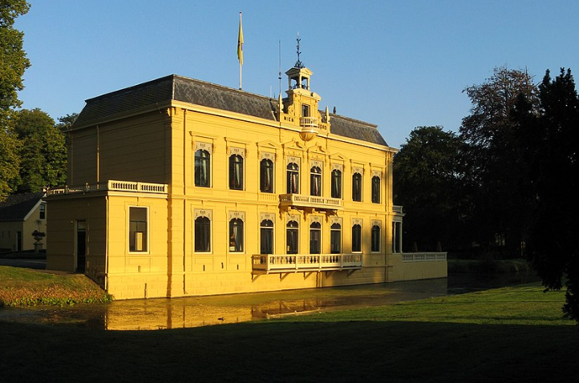
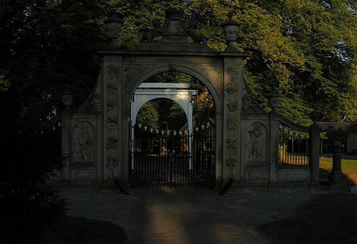

Leek
Feitjes
- De inwoners van Leek noemt men Leeksters.
- Leek is ontstaan bij de schans die er in de Tachtigjarige Oorlog werd aangelegd. De naam is ontleend aan de beek de Lek (of Leke) en heet op kaarten uit het midden van de 19e eeuw nog "De Leek". De plaats wordt ook nu nog wel De Leek genoemd.
- De Friese wortels van het dorp Leek komen terug in de naam van het winkelcentrum 'Liekeblom', de Leeksterbloem vernoemd naar de prijs bij een schaatswedstrijd uit eerdere jaren rond De Li(e)ke en de boomwallen in het zogenaamde coulisselandschap die vroeger deel uitmaakten van uitlopers van de Friese Wouden.
- In het centrum van Leek is een kleine kerk gevestigd, die als kapel van de vroegere bewoners van Nienoord kan worden beschouwd. De kerk van Nienoord is de kerk van Midwolde, waar zich ook het praalgraf van Carel Hieronymus van In- en Kniphuisen en zijn echtgenote Anna van Ewsum bevindt.
- Aan de zuidkant van Leek, tussen Leek en Zevenhuizen, wordt sinds 2006 de wijk Oostindie aangelegd. Ten noorden van de autosnelweg A7 is het bedrijvenpark Leeksterveld in ontwikkeling.
Nienoord
In lectus justo, tincidunt ac arcu quis, tempor luctus nisi. Quisque mollis ultricies condimentum. Duis condimentum lorem a egestas convallis. Fusce sollicitudin tempus est. In viverra viverra turpis, vitae ultricies augue. Pellentesque auctor id lacus quis euismod. Curabitur commodo iaculis erat, ac porttitor est rhoncus sit amet. Donec posuere, lacus vitae eleifend porttitor, turpis est pharetra nunc, eu bibendum leo nisl sit amet est. Nam mollis libero eu sem porttitor, quis dictum ex mollis. Nullam facilisis imperdiet leo, nec euismod augue ullamcorper non. Pellentesque vel rhoncus nunc, nec dapibus sem. Sed sollicitudin odio non convallis suscipit.
Phasellus quis tincidunt ligula. Donec tempor nibh eu lectus sagittis mattis. Suspendisse porta purus magna, nec blandit nisl sollicitudin sit amet. Aliquam vitae iaculis nibh. Aliquam quis aliquet risus. Proin vulputate, ex quis laoreet elementum, dui elit pretium enim, ut dapibus diam dui sed leo. Phasellus ullamcorper, nisi auctor feugiat venenatis, leo augue tristique quam, ac efficitur metus quam et arcu. Phasellus et venenatis libero, eu sollicitudin quam. Nunc lorem justo, aliquet id scelerisque nec, dictum hendrerit lacus.
Aenean tortor tellus, scelerisque in quam a, ornare scelerisque lacus. Duis at condimentum ipsum. Ut at aliquam libero. Proin a mi placerat, finibus augue vitae, imperdiet tellus. Fusce molestie tellus at nisl placerat laoreet. Nullam fermentum mattis dolor, eu tempus ipsum ullamcorper vitae. Maecenas sit amet diam ac nulla tempor suscipit. Aenean gravida non erat sit amet maximus. Fusce convallis sem egestas, mollis turpis at, volutpat enim. Vestibulum sit amet aliquet elit, et ultrices risus. Cras vestibulum, erat in finibus consequat, tellus velit mattis nulla, at elementum libero turpis at diam. Nullam finibus turpis sit amet ante euismod, sed sollicitudin elit aliquet. Integer molestie ante egestas, elementum magna nec, porta leo. Fusce nec turpis at velit faucibus maximus eget id nibh. In vitae orci vel massa dapibus aliquet. Mauris id laoreet justo.
In lectus justo, tincidunt ac arcu quis, tempor luctus nisi. Quisque mollis ultricies condimentum. Duis condimentum lorem a egestas convallis. Fusce sollicitudin tempus est. In viverra viverra turpis, vitae ultricies augue. Pellentesque auctor id lacus quis euismod. Curabitur commodo iaculis erat, ac porttitor est rhoncus sit amet. Donec posuere, lacus vitae eleifend porttitor, turpis est pharetra nunc, eu bibendum leo nisl sit amet est. Nam mollis libero eu sem porttitor, quis dictum ex mollis. Nullam facilisis imperdiet leo, nec euismod augue ullamcorper non. Pellentesque vel rhoncus nunc, nec dapibus sem. Sed sollicitudin odio non convallis suscipit.
Phasellus quis tincidunt ligula. Donec tempor nibh eu lectus sagittis mattis. Suspendisse porta purus magna, nec blandit nisl sollicitudin sit amet. Aliquam vitae iaculis nibh. Aliquam quis aliquet risus. Proin vulputate, ex quis laoreet elementum, dui elit pretium enim, ut dapibus diam dui sed leo. Phasellus ullamcorper, nisi auctor feugiat venenatis, leo augue tristique quam, ac efficitur metus quam et arcu. Phasellus et venenatis libero, eu sollicitudin quam. Nunc lorem justo, aliquet id scelerisque nec, dictum hendrerit lacus.
Aenean tortor tellus, scelerisque in quam a, ornare scelerisque lacus. Duis at condimentum ipsum. Ut at aliquam libero. Proin a mi placerat, finibus augue vitae, imperdiet tellus. Fusce molestie tellus at nisl placerat laoreet. Nullam fermentum mattis dolor, eu tempus ipsum ullamcorper vitae. Maecenas sit amet diam ac nulla tempor suscipit. Aenean gravida non erat sit amet maximus. Fusce convallis sem egestas, mollis turpis at, volutpat enim. Vestibulum sit amet aliquet elit, et ultrices risus. Cras vestibulum, erat in finibus consequat, tellus velit mattis nulla, at elementum libero turpis at diam. Nullam finibus turpis sit amet ante euismod, sed sollicitudin elit aliquet. Integer molestie ante egestas, elementum magna nec, porta leo. Fusce nec turpis at velit faucibus maximus eget id nibh. In vitae orci vel massa dapibus aliquet. Mauris id laoreet justo.